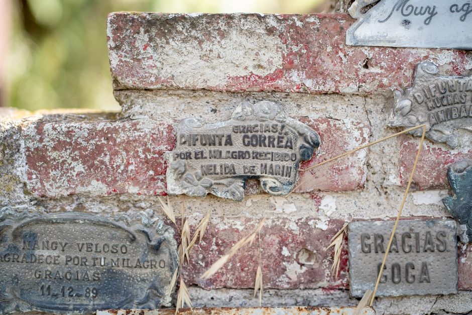
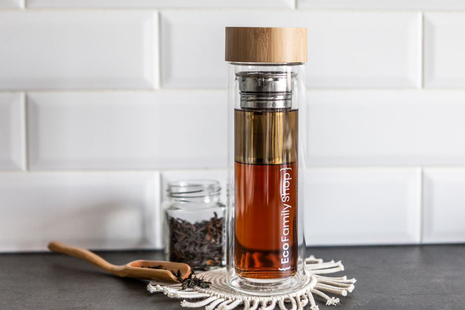
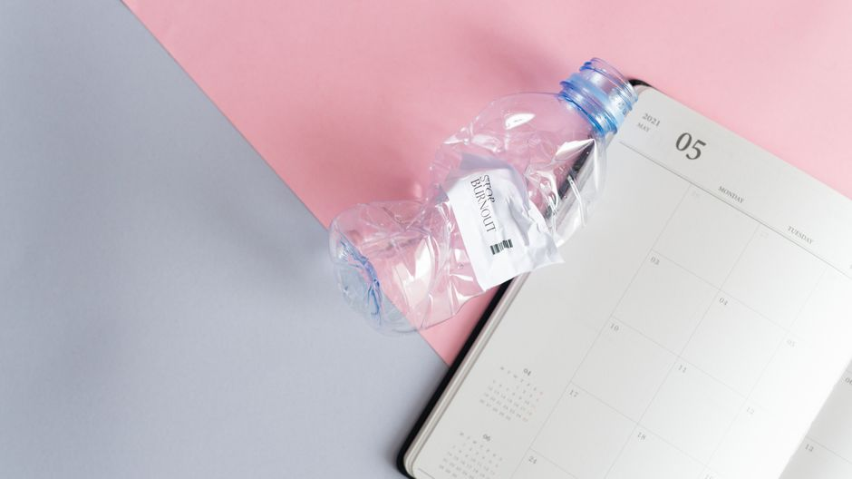
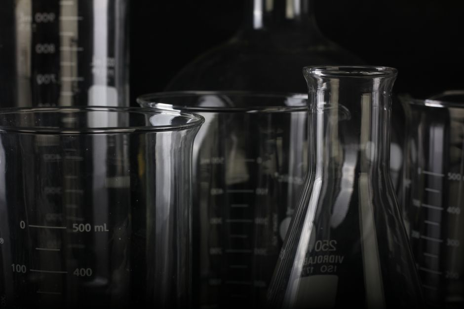
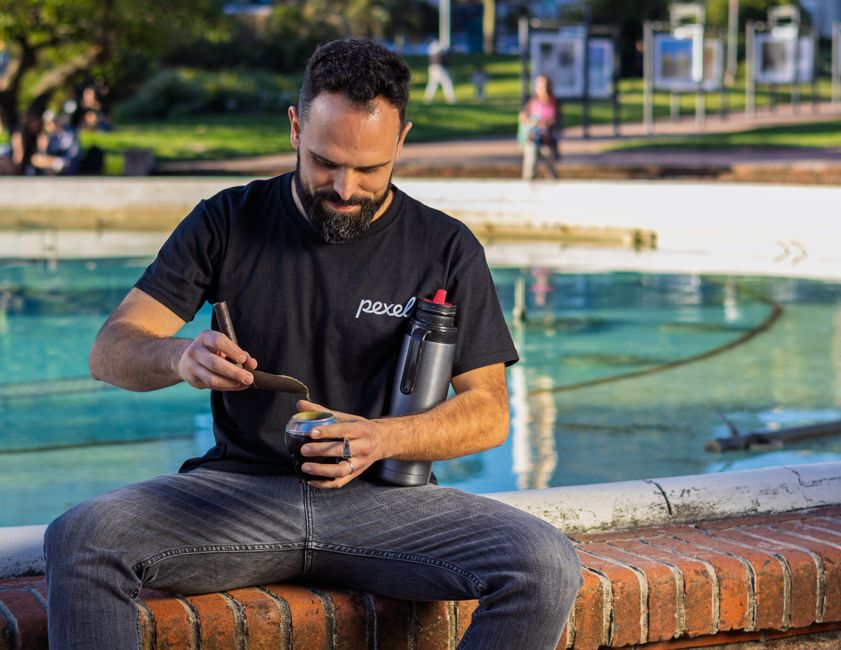
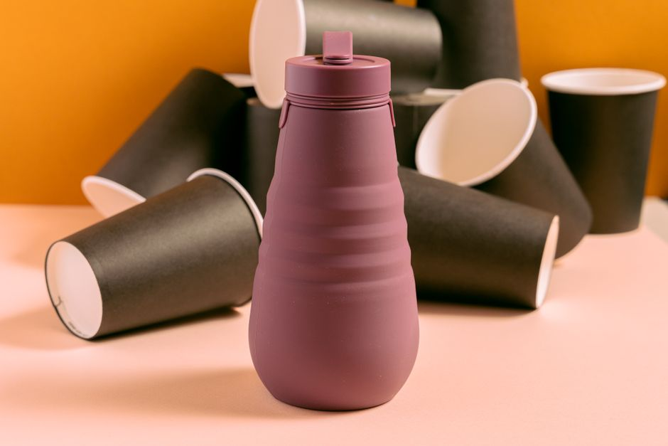

Botella de agua deportiva con boquilla de mordida y correa de transporte para ciclismo y fitness
Botella de agua deportiva con boquilla de mordida y correa. Hidratación cómoda para ciclismo, gym y fitness. ¡Bebe sin soltar el manillar!
0 vistas
Botella de agua de acero inoxidable con boquilla de flujo rápido y sistema de bloqueo anti-derrames
Botella de acero inoxidable con boquilla de flujo rápido y sistema antiderrame. Mantiene la temperatura, práctica y duradera. ¡Compra ahora!
0 vistas

Botella de agua de acero inoxidable con infusor de hielo desmontable y compartimento de almacenamiento para píldoras o suplementos
Botella térmica de acero inoxidable con infusor desmontable para hielo y frutas. Incluye compartimento para suplementos. Mantén tu agua fría por horas.
0 vistas

Botella de agua de vidrio con sistema de infusor de té desmontable y doble pared aislante de 750ml
Botella vidrio doble pared 750ml con infusor té desmontable. Hidrátate con sabor. Práctica, aislante y reutilizable. ¡Descubre la tuya!
0 vistas
Botella de agua de vidrio con marcas de medición y tapa de bambú de 1 litro
Botella de vidrio reutilizable 1L con marcas de medición y tapa de bambú. Sostenible, duradera y elegante. ¡Adiós al plástico!
0 vistas

Botella de agua con indicador de hidratación y marcas de tiempo para beber
Botella de agua inteligente con marcas de tiempo y indicador de hidratación. Bebe más agua fácilmente. Diseño práctico y efectivo para tu salud.
0 vistas

Botella de agua de cristal borosilicato con funda de neopreno aislante de 500ml
Botella de cristal borosilicato 500ml con funda neopreno aislante. Mantén tus bebidas a la temperatura perfecta. Resistente y duradera. ¡Compra ahora!
0 vistas

Botella de agua con infusor de frutas y filtro integrado de 1 litro
Botella de agua 1L con infusor de frutas y filtro integrado. Hidratación saludable con sabor natural. Perfecta para llevar a cualquier lugar. ¡Descubre la nuestra!
0 vistas

Botella de agua plegable de silicona reutilizable de 500ml
Botella agua plegable de silicona 500ml. Ligera, reutilizable y compacta. Perfecta para viajes, senderismo y deporte. ¡Ahorra espacio en tu mochila!
0 vistas

Botella de agua térmica de acero inoxidable con aislamiento de doble pared de 750ml
Botella térmica de acero inoxidable 750ml con aislamiento de doble pared. Mantén tus bebidas calientes o frías durante horas. ¡Descubre la solución perfecta!
0 vistas